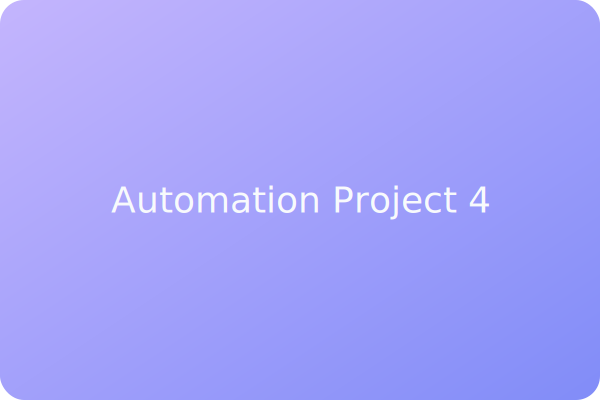

ClickUp Project Automations
Automation blueprints that connect ClickUp tasks with Slack, email, and reporting tools for effortless project visibility.
Highlights
- Configured conditional automations triggered by task status and due dates.
- Integrated Google Sheets for progress tracking and executive summaries.
- Created alerting flows for stakeholders in Slack and email.
Impact
Teams gained real-time visibility and accountability, while manual updates dropped dramatically across departments.